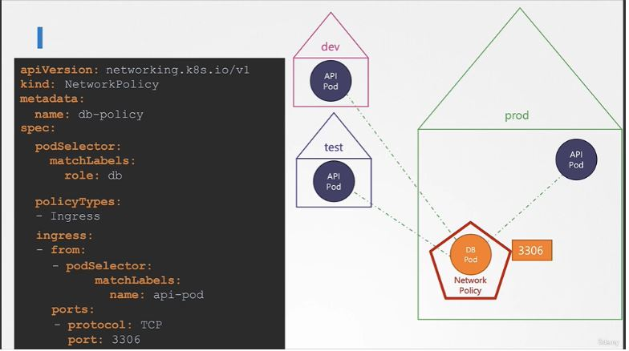
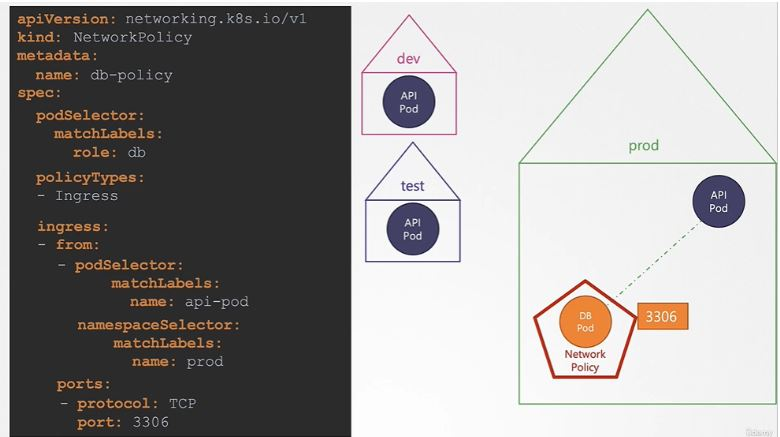
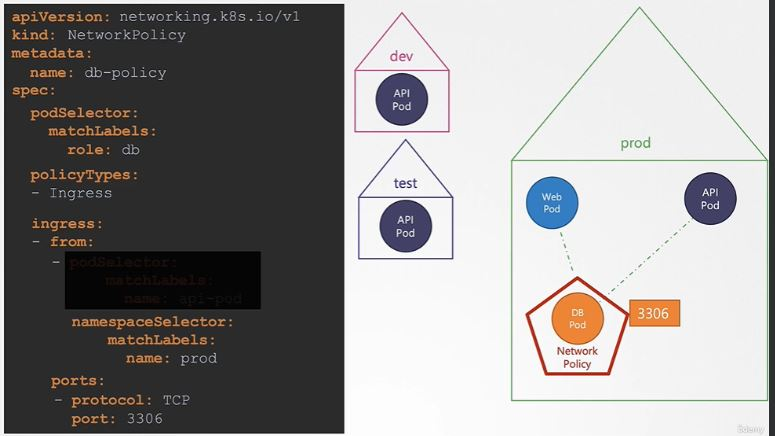
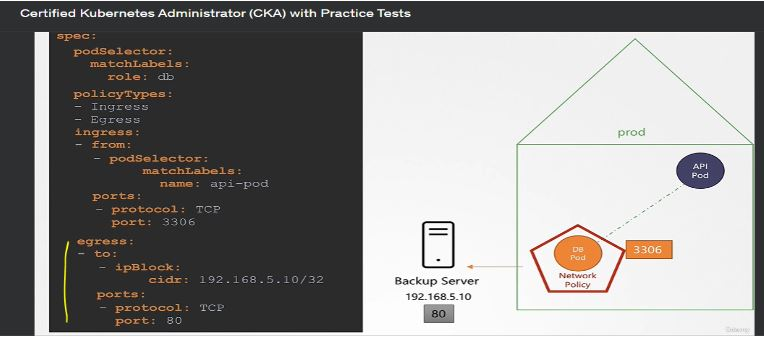
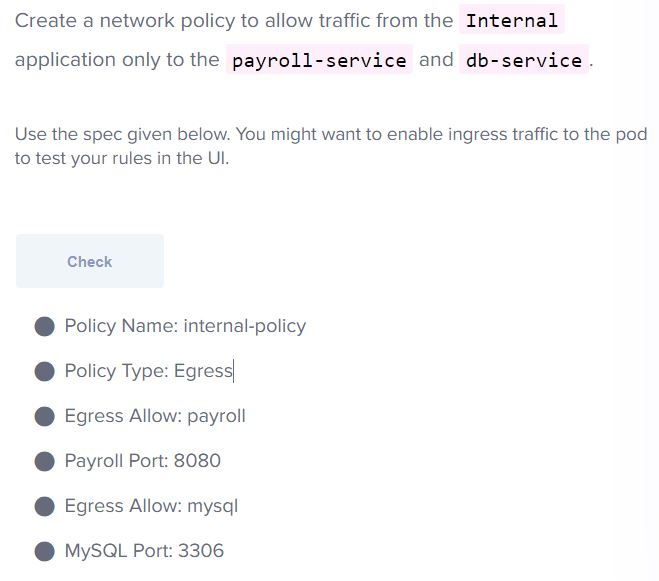

All connections are allowed for each pod in Kubernetes to communicate with each other.
Ingress: Incoming connection to pod.
If we need a particular port to communicate with the pod, then we will write an ingress network policy. All ingress communication will be blocked except the port which is defined.
Even if all egress communication is blocked from the pod, outgoing communication for that defined port will still be allowed.
This blocks out all traffic first as mentioned below in the snippet:

Note that if a particular port is allowed on a pod, then all pods labeled as role: db within the cluster will be able to communicate with that pod. For example, port 3306 is only allowed for ingress, so it is allowed for all pods located in different namespaces within the cluster.
If we want to restrict the connection to the same namespace where the db pod is located, we need to specify the namespace as shown below:
If no pod selector is mentioned, then all pods within the namespace will be allowed to communicate with the db pod on port 3306, as shown below:
If you have a backup server outside the Kubernetes cluster and want to allow ingress communication with a DB pod, you will allow the IP block in that case.

Egress: Outgoing connection from pod.
For example, if a DB pod needs to communicate with an external backup server (where the DB pod has an agent that communicates with the backup server), we will allow egress traffic communication like below:
More egress examples:
